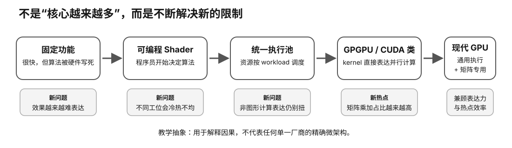

GPU Evolution · Lesson 01 · L0
GPU 为什么从固定功能走向统一计算？
这不是一节“显卡历史课”。它要给你建立整门课程的第一条因果链：为什么 GPU 会从只能按规定画图的专用流水线，逐步变成可以运行 CUDA、HIP、Metal kernel，最后又加入 Tensor / Matrix 单元的高吞吐计算机。
Prerequisite Check
本课没有技术前置要求。你只需要知道 CPU 和 GPU 都是会执行指令、搬运数据的芯片，但它们为不同类型的工作做了不同取舍。
如果你现在连“线程、显存、矩阵”都不熟也没关系：本课只要求你先学会问三个问题——工作能不能并行？硬件能不能被程序控制？专用单元是否刚好匹配热点？
真实问题：为什么“游戏卡”后来会成为 LLM 主力硬件？
如果你第一次看本地 LLM 配置，会遇到一个很奇怪的事实：我们谈的是语言模型，却在比较 RTX、Radeon、Arc、Apple GPU；会谈显存、CUDA Core、Tensor Core、Metal、ROCm。为什么负责画三角形的硬件会跑到语言模型中心？
错误回答是：“因为 GPU 核心多。”核心数量只是结果之一。更完整的答案是：

第一阶段：固定功能——快，但只能走设计好的路
想象一家流水线工厂：第一个工位永远切材料，第二个永远喷漆，第三个永远包装。只要产品永远按同一流程生产，这种设计非常高效，因为每个工位都能针对单一任务做得很快。
早期 3D GPU 很像这种工厂。图形流水线中的变换、光照、纹理、光栅化等工作有大量重复并行计算，因此把步骤直接固化进硬件可以获得很高吞吐。
问题也显而易见：当你想做硬件没有预先设计好的效果时，你几乎无路可走。固定功能提供速度，却牺牲表达能力。
一个很重要的工程规律
专用硬件通常在目标任务上更高效，但越专用，就越依赖“未来工作仍然像设计时预想的那样”。
这个规律以后会反复出现：固定图形单元、Tensor Core、视频编解码器、NPU 都是在“通用性”和“专用效率”之间做取舍。
第二阶段：可编程 Shader——把“做什么”交给程序
当图形需求越来越复杂，开发者需要的不只是若干开关，而是写自己的小程序。可编程 vertex / pixel shader 的出现意味着 GPU 的一部分开始从“固定机器”变成“可编程并行执行器”。
这里不要急着背 shader 语法。你只要抓住一个变化：
固定功能：硬件设计者决定算法 可编程 Shader： 硬件仍为图形吞吐优化 但程序员开始决定一部分算法
这是 GPU 通往通用计算的关键一步。因为一旦执行资源能接收程序，问题就从“它能不能做某件事”变成“编程模型是否方便、内存系统是否支持、软件工具是否成熟”。
第三阶段：Unified Shader——不要把执行工位永久焊死
假设一颗 GPU 有 128 个可编程执行单元，但 64 个永久服务 vertex shader，另外 64 个永久服务 pixel shader。
如果某个场景恰好需要 80% vertex 工作和 20% pixel 工作，那么 pixel 那一侧可能闲着，而 vertex 一侧排队。总资源很多，却不能灵活调度。
Unified Shader 的核心思想，是让一组更统一的可编程执行资源根据当前 workload 承担不同 shader 工作。这提高了硬件利用率，也让执行资源进一步具备“通用并行机器”的味道。
概念模拟：固定分区 vs 统一执行池
Vertex · Pixel
固定 50/50 分区：利用率
统一 128-unit 池：利用率
这是教学模型，故意加入少量通用化/调度开销；不要把百分比当作真实 GPU benchmark。
Unified 不等于“整颗 GPU 全都一样”
这是初学者最容易形成的错误印象。Unified 主要说的是可编程 shader 执行资源统一化；纹理单元、ROP、内存控制器、视频引擎，以及后来出现的 RT Core、Tensor / Matrix 单元，仍然可以高度专用。
现代 GPU 的典型结构恰恰是：
通用并行执行资源 + 高价值热点专用单元 + 多层片上存储 / cache + 高带宽外部内存 + 调度与软件栈
第四阶段：GPGPU / CUDA——不用再假装自己在画图
早期想利用 GPU 做非图形计算时，开发者常常要把问题“伪装”成纹理和 shader 工作。这说明硬件已经有计算潜力，但软件抽象还没跟上。
CUDA 等通用 GPU 计算平台的价值，不只是提供一个编译器，而是把 GPU 计算直接表达成更自然的概念：线程、线程块、网格、共享内存、同步、设备内存、kernel launch。
以前： 我要做通用计算 → 想办法塞进图形 API / shader 表达 后来： 我要做通用计算 → 写 kernel → 显式组织并行工作与数据
从这一刻开始，GPU 不再只是“可以被黑出来做计算的图形芯片”，而成为有完整编程模型、工具链、库和开发者生态的计算平台。
第五阶段：Tensor / Matrix 单元——历史为什么又回到专用化？
既然统一可编程这么好，为什么后来又出现 Tensor Core、Matrix Core、XMX 等专用矩阵路径？因为“统一”和“专用”并不是非此即彼。
深度学习把矩阵乘加变成极高频热点。对这类规则操作，专门的数据通路可以在单位面积、单位功耗内完成更多工作。所以现代 GPU 又把部分晶体管投入专用矩阵计算。
统一执行解决的是“很多不同工作都要能做”；矩阵单元解决的是“其中一个特别重要的热点要做得更高效”。
这和早期固定功能最大的区别是：现代 GPU 并没有因此退回“只能干一种事”。它仍然保留通用可编程核心，只是在热点旁边增加专用加速路径。
从这段历史抽出一个可复用的 GPU 阅读框架
以后看到任何一代 NVIDIA、AMD、Apple、Intel GPU，不要先数“多少核心”。先用下面五个问题拆：
| 问题 | 你在查什么 | 和本地 LLM 的关系 |
|---|---|---|
| 1. 执行资源是什么？ | SM/CU/Xe-core、SIMT/SIMD、warp/wave/threadgroup | kernel 如何获得并行吞吐 |
| 2. 数据放哪里？ | register、shared/LDS/threadgroup、cache、VRAM/unified memory | 模型能否放下、数据搬运是否昂贵 |
| 3. 哪些热点被专用化？ | Tensor/Matrix/XMX、视频、光追等 | 特定 dtype / kernel 能否利用硬件 |
| 4. 内存系统多强？ | 容量、带宽、cache、互联 | decode 常受带宽与工作集约束 |
| 5. 软件能否把硬件用起来？ | CUDA/ROCm/Metal/oneAPI、驱动、runtime、backend | 纸面能力不等于当前可运行能力 |
Worked Example：两张“纸面算力都不错”的旧卡怎么想？
假设你在二手市场看到两张旧卡。A 卡有更高理论 FP32，B 卡理论 FP32 稍低，但显存更大、带宽更高、当前 llama.cpp backend 支持更完整。
本课之后，你不应该再说“核心多/TFLOPS 高，所以 A 必赢”。你应该先拆成：
- 目标模型权重 + KV + runtime buffer 能否放入显存？
- decode 是算力受限还是内存带宽受限？
- 目标量化格式是否有高效 kernel？
- 驱动与 runtime 是否仍支持这张卡？
- 目标程序是否真的走 GPU backend，而不是悄悄 fallback 到 CPU？
这就是从“看参数表”转向“建系统模型”的第一步。
Why it matters：为什么这节会影响你以后买卡？
- 避免把游戏 FPS 当 LLM 排名。两类 workload 使用同一颗 GPU，但瓶颈、数据类型、kernel 和内存行为不同。
- 避免迷信单一规格。核心数、TOPS、TFLOPS 都只是某种条件下的上限，不是应用性能。
- 理解软件生态为什么值钱。可编程硬件必须通过编译器、runtime、库和 backend 才能变成可用能力。
- 理解旧卡价值为什么会突然变化。硬件不会变，但驱动、runtime、backend 支持会变化。
- 理解现代 GPU 为什么“又通用又专用”。这会帮助你读 Tensor Core、Matrix Core、XMX、ANE 等营销词时不迷路。
常见误区纠偏
| 误区 | 为什么错 | 更好的问法 |
|---|---|---|
| GPU 核心多，所以一定比 CPU 快 | 并行度、数据搬运、kernel、任务规模都可能限制利用率 | 这个 workload 能暴露多少并行工作，瓶颈在哪里？ |
| Unified 以后所有单元都一样 | 大量专用 fixed-function/accelerator 单元仍存在 | 哪些资源通用，哪些仍专用？ |
| 有 Tensor Core 就一定适合 LLM | 模型是否能放下、dtype/kernel/backend 是否命中都更关键 | 目标 runtime 是否真的使用相应矩阵路径？ |
| 新架构一定比旧架构更值 | 价格、容量、功耗、软件支持、整机成本共同决定价值 | 对我的模型和预算，约束条件是什么？ |
小实验：Experiment 01
你真正要观察什么
- 当 workload 极度偏向某一类工作时，固定分区为什么浪费资源；
- 当 workload 比例变化时，统一池为什么更容易维持利用率；
- 为什么统一池也可能付出调度、控制或通用化成本；
- 为什么这个实验只能证明“资源可重分配”的直觉，不能代表真实某代 GPU 性能。
没有 GPU 怎么办？
本课是 L0。页面里的概念模拟和 Experiment 01 的计算/图示路径就足够完成学习目标。你现在不需要购买 GPU，也不需要安装 CUDA。
以后有真机时，可以把这个模型迁移到“实际 GPU 利用率为什么上不去”的诊断，但不要倒过来用一张卡的瞬时 utilization 数字证明架构历史。
排错：如果你觉得这些词还是混在一起
- Shader vs CUDA kernel：都属于程序控制的 GPU 工作，但所属 API、目的和编程模型不同。
- Core vs SM/CU：不要先把营销中的“core”理解成 CPU core；后面会专门学 SM、warp、scheduler。
- Unified Shader vs Unified Memory：完全不是一个概念。前者谈执行资源，后者谈内存体系/地址与物理存储关系。
- Tensor Core vs GPU：Tensor Core 是 GPU 内的一类专用执行资源，不是一块独立显卡。
Expected Observations
- 沿时间线比较早期 fixed-function、unified shader 与 compute/AI 世代时，你应看到“可编程范围”持续扩大，而不是简单出现一条“新 GPU 永远更快”的直线。
- 同一代新 feature 只有被软件/API/kernel 使用时才会进入实际 workload；纸面 feature 与应用收益是两层 Evidence。
- 用于本地 LLM 的判断会逐渐从图形管线 feature 转向通用执行、memory hierarchy、低精度矩阵路径与软件生态。
这些是结构性预期，不是任何具体 SKU 的性能保证。
Retrieval Practice
- 不用“核心更多”这句话，解释 GPU 为什么能从图形芯片演化成通用计算平台。
- 固定功能流水线的优势是什么？它为什么最终需要引入可编程性？
- Unified Shader 主要减少什么资源浪费？它为什么不意味着整颗 GPU 没有专用单元？
- 既然统一可编程很重要，为什么现代 GPU 又加入 Tensor / Matrix 单元？
- 一张旧卡理论 FP32 很高，但你想用它跑 Q4 本地 LLM。至少还要查哪五类信息？
- 把同样的“通用资源 + 专用热点 + 内存系统 + 软件生态”框架迁移到 Apple Silicon，你会分别查什么？
Decision Rule
完成本课后，你可以用 GPU 演化史解释“为什么现代 GPU 是这种结构”；你不能仅凭架构名称、核心数、TFLOPS 或 AI TOPS 对具体显卡做购买结论。
购买判断必须继续经过：模型 fit → runtime/backend 支持 → 实际性能/质量 → 功耗与整机约束 → 价格与卡况。
Transfer：把这套思维带到四个生态
- NVIDIA：SM / warp / CUDA + Tensor Core。
- AMD：CU / wavefront / HIP/ROCm + matrix acceleration。
- Apple：GPU SIMD/threadgroup + unified memory + Metal/MLX。
- Intel：Xe-core / subgroup + XMX + oneAPI/SYCL。
名字不同，核心问题仍然是：怎么执行、怎么搬数据、哪些热点专用化、软件能不能把它用起来。
完成证据
提交 Experiment Card，并用自己的话画出：
固定功能 → 可编程 Shader → 统一执行池 → GPGPU / CUDA 类编程模型 → 通用并行资源 + 矩阵专用化
再写 5 句话说明：为什么这条历史会改变你以后比较二手 GPU 的方法。
Primary Sources
- NVIDIA CUDA Programming Guide — Introduction
- NVIDIA Research — A User-Programmable Vertex Engine
- NVIDIA GeForce 8 Series — Unified Architecture
- NVIDIA — CUDA Refresher
- NVIDIA Volta Architecture
- AMD ROCm HIP — Hardware implementation
稳定教材只写可长期复用的机制。具体驱动、runtime、backend 支持和当前价格属于动态 Intelligence，学习到对应决策课时再查当前事实。